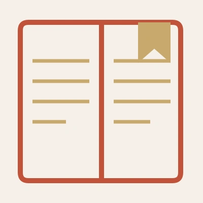
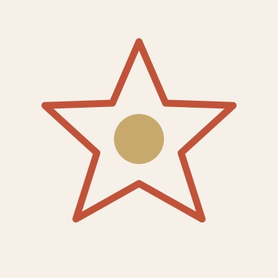
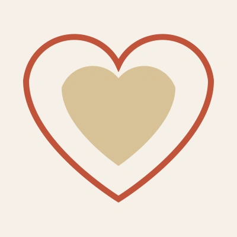

Portfolio — Recette Créative
A taste of
my work.
"Le Design, c'est comme une recette que l'on suit au mieux, avec patience, détail, minutie, et un grain de folie. Pour faire ressortir le meilleur des saveurs."
— Marie

Bienvenue dans ma cuisine créative !
Communicante et graphiste en devenir, je conçois des projets comme on dresse une table : avec connaissance, saveur et une touche d'audace. Pour moi, un bon design, c'est comme une recette réussie : il faut de la technique, de la créativité et une solide gestion de projet pour que le service soit au plus prêt de l'attente du client.
Mon parcours m'a appris à porter plusieurs toques selon vos besoins :
- Chef pour vos identités visuelles, je crée l'ingrédient secret qui vous rend unique.
- Cuisinière rigoureuse en gestion de projet, je m'assure que le service est fluide du brief jusqu'à la livraison.
- Commis sur Figma, Adobe ou WordPress, je travaille le pixel et le code pour dresser des interfaces web et des maquettes print qui vous correspondent.
Mon objectif ? Transformer vos idées brutes en solutions visuelles savoureuses, servies sur un plateau (digital ou papier).
La carte est servie ! Je vous laisse découvrir mes dernières créations.
Et si vous souhaitez en savoir plus sur mon parcours, vous trouverez ici la liste des fournisseurs.
Les Ingrédients
Compétences & soft skills
Savoir- Identité visuelle Chef
- Maquettes (Print & Digital) Commis
- Web design Commis
- Gestion de Projet Cuisinière
- Evènementiel Cuisinière

Savoir-faire- PAO : InDesign, Illustrator Cuisinière
- PAO : Photoshop Commis
- Développement : HTML/CSS/ CMS (WordPress) Cuisinière
- UI/UX : Figma Commis
- Productivité / Création rapide : Canva Cuisinière

Savoir-être- Investie Chef
- Organisée Cuisinière
- Réactive Chef
- Polyvalente Cuisinière
- Patiente Chef
 Mise en place.
Mise en place.
La préparation
Une approche pleine de curiosité et de volonté d'aller plus loin. Un mélange de connaissance et de découverte qui comme une recette se construit et se prépare avec minutie.
Phase I
Le sourcing
Pour qui, avec qui, et avec quel objectif.
Phase II
La préparation
Laisser mijoter, réduire et en ressortir une solution la plus claire et la plus adaptée possible.
Après quelques années d'expérience en communication, et avec la découverte de nouveaux ingrédients, je développe de nouvelles techniques de réflexion pour mieux connecter print et digital.